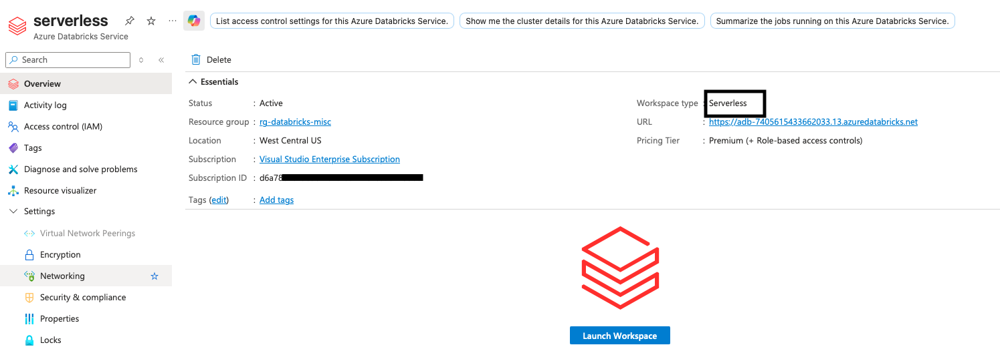
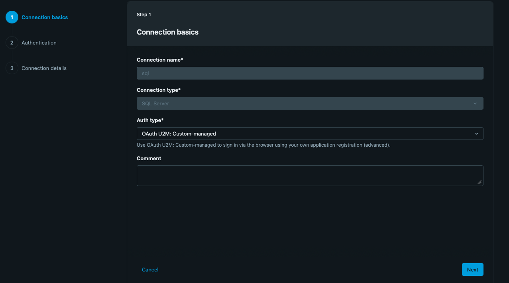
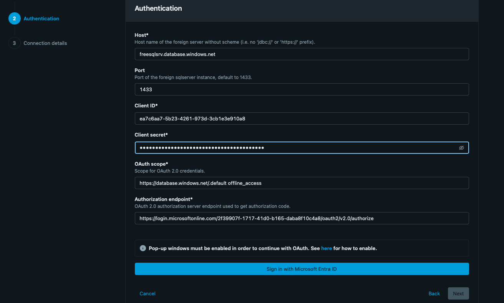
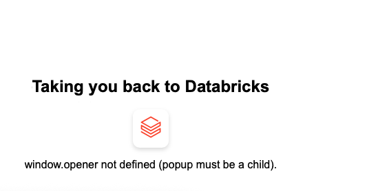
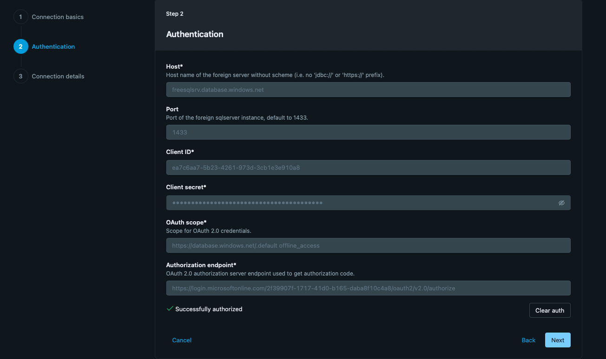
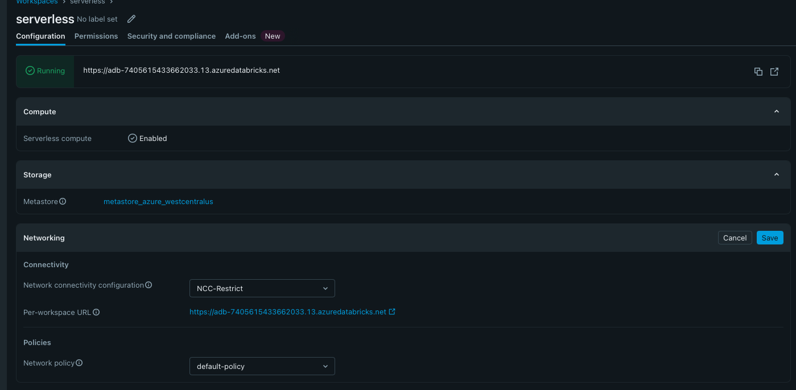
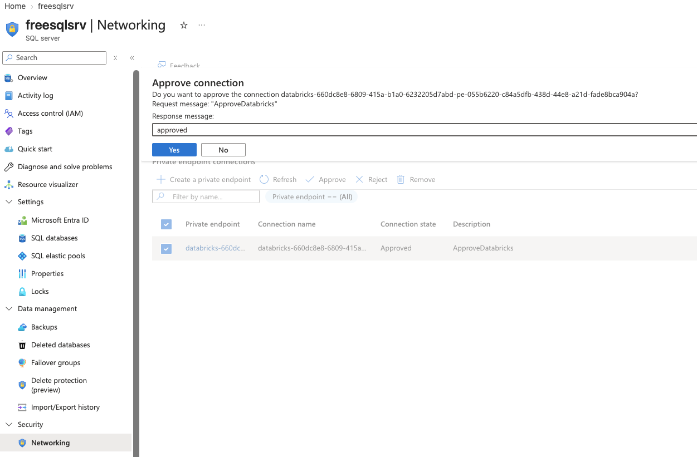
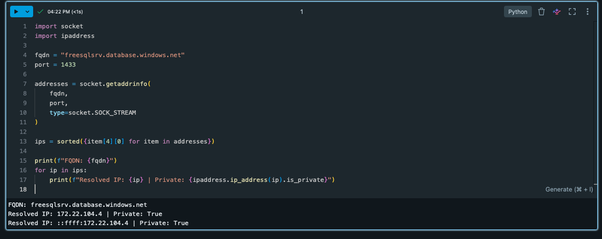
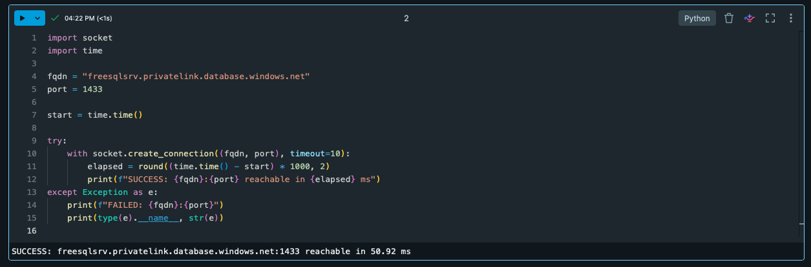

Databricks Serverless & NCC
A practical, screenshot-driven learning guide covering OAuth U2M, Network Connectivity Configuration, Azure Private Endpoint approval, DNS validation, and TCP connectivity to Azure SQL Server.
Purpose
An evolving hands-on guide for understanding Azure Databricks Serverless, Network Connectivity Configuration (NCC), and private connectivity to Azure SQL Server. Each lab step includes configuration, reasoning, screenshots, and validation tests.
Current Lab Progress
- Create an Azure Databricks Serverless workspace.
- Create a SQL Server connection using OAuth U2M: Custom-managed.
- Complete Microsoft Entra browser authorization and confirm Successfully authorized.
- Verify source tables are visible through the Databricks Catalog.
- Attach the workspace to NCC-Restrict.
- Add a private endpoint rule for the Azure SQL Server using subresource
sqlServer. - Approve the private endpoint connection on the Azure SQL Server.
- Verify the NCC rule reaches ESTABLISHED.
- Validate DNS resolves to a private IP.
- Validate TCP connectivity to port
1433.
Step 1 — Azure Databricks Serverless Workspace
Create the Azure Databricks workspace as a Serverless workspace. Serverless compute is enabled and becomes the compute plane used for the connection and NCC tests.

Step 2 — SQL Server Connection
Create a Databricks connection with:
- Connection type: SQL Server
- Authentication: OAuth U2M: Custom-managed
- Port: 1433
- Client ID / Secret: Microsoft Entra application registration credentials
- OAuth scope:
https://database.windows.net//.default offline_access


Browser Authorization
Click Sign in with Microsoft Entra ID. The lab encountered a popup/window.opener issue initially. After completing browser authorization, Databricks displayed Successfully authorized.


Catalog Validation
After authorization, the connection can be used from the Databricks Catalog. The source objects/tables are listed, demonstrating successful metadata discovery through the connection.

NCC Configuration
The workspace Networking section shows NCC-Restrict as the Network Connectivity Configuration. The NCC is used to manage private endpoint connectivity from Serverless compute to supported Azure resources.

Add Private Endpoint Rule
In the NCC, select Add private endpoint rule and provide:
- Azure resource ID: full resource ID of the destination.
- Azure subresource type:
sqlServer.
Select Add to create the private endpoint request.
Approve the Private Endpoint
On the Azure SQL Server resource, open Networking → Private endpoint connections. Select the Databricks request and choose Approve. In this lab the Azure-side connection became Approved.

Verify NCC — ESTABLISHED
Return to Databricks Account → Security → Network connectivity configuration → NCC-Restrict → Private endpoint rules and refresh until the connection status becomes ESTABLISHED.

Connectivity Test #1 — DNS
Run this in a Databricks Serverless notebook:
import socket
import ipaddress
fqdn = "sqlserver.database.windows.net"
port = 1433
addresses = socket.getaddrinfo(
fqdn,
port,
type=socket.SOCK_STREAM
)
ips = sorted({item[4][0] for item in addresses})
print(f"FQDN: {fqdn}")
for ip in ips:
print(f"Resolved IP: {ip} | Private: {ipaddress.ip_address(ip).is_private}")Observed:

Connectivity Test #2 — TCP 1433
Test the Private Link hostname on TCP port 1433:
import socket
import time
fqdn = "sqlserver.privatelink.database.windows.net"
port = 1433
start = time.time()
try:
with socket.create_connection((fqdn, port), timeout=10):
elapsed = round((time.time() - start) * 1000, 2)
print(f"SUCCESS: {fqdn}:{port} reachable in {elapsed} ms")
except Exception as e:
print(f"FAILED: {fqdn}:{port}")
print(type(e).__name__, str(e))Observed: SUCCESS: sqlserver.privatelink.database.windows.net:1433 reachable in .

End-to-End NCC Flow
sqlServerWhat Each Test Proves
| Test | Purpose | Lab Result |
|---|---|---|
| NCC status | Private endpoint lifecycle completed | ESTABLISHED |
| Azure approval | Destination resource accepted the request | Approved |
| DNS | Hostname resolves to private address | |
| TCP 1433 | Serverless can reach SQL Server | SUCCESS — |
| Catalog | Authenticated connection discovers source tables | Tables visible |
Key Learning Points
- OAuth authorization validates the identity/authentication path.
- NCC controls the private connectivity configuration used by Serverless.
- The private endpoint rule identifies the Azure resource and service subresource.
- The Azure resource owner must approve the private endpoint request.
- ESTABLISHED confirms the NCC private endpoint lifecycle has completed.
- DNS validation confirms name resolution to a private address.
- TCP 1433 validation confirms network reachability to SQL Server.
- Catalog validation confirms the application-level connection can discover source tables.
Next Topics
- NCC account-level and regional design.
- Multiple workspaces sharing an NCC.
- Private endpoint rules for other supported Azure services.
- DNS and Private Link DNS behavior.
- Firewall and network security requirements.
- Troubleshooting PENDING vs ESTABLISHED.
- Serverless restart requirements after NCC changes.
- Serverless NCC vs classic VNet-injected Databricks networking.
Lab Screenshots